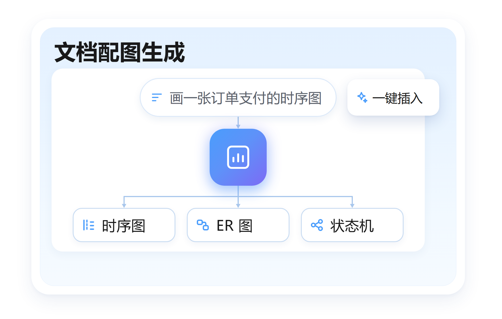
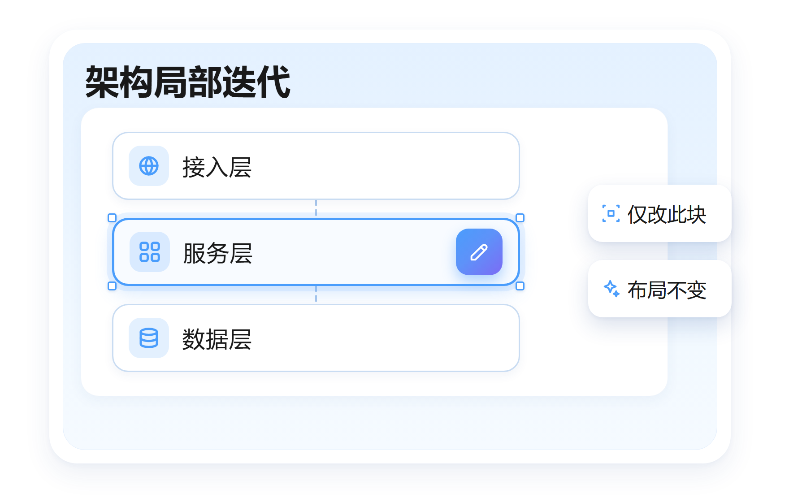
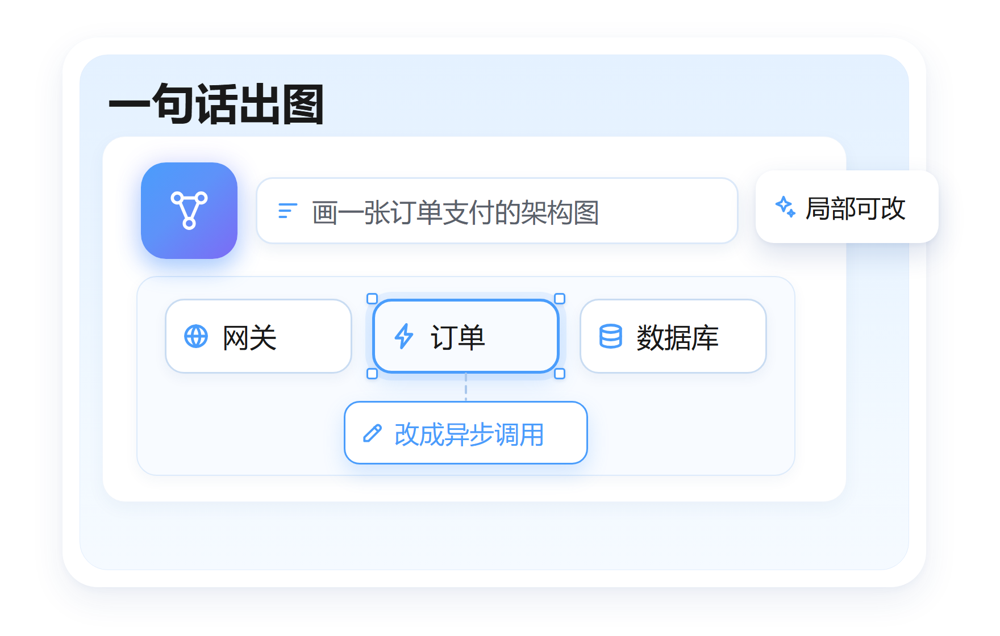

基于 4 个产品场景（昇腾云算力 / Nacos / OpenCode / Easy Dataset）共 14 张场景图的逆向分析。目标：仅凭一个标题，即可复现同一风格的场景图。
这不是"AI 生成的插画"，而是一套扁平矢量 UI 示意图系统：用卡片层叠制造空间、用渐变图标瓦片承载主体、用虚线连接表达流程、用骨架条代替真实内容。
三句话记住它：无人物、无透视、无照片质感；卡片叠起来但有 0° 透视；一根蓝紫色的线串起所有信息。

左→右流程 + 四联输出
界面隐喻 · 分层架构选中态
界面隐喻 · 画布编辑态所有图共用同一套"外壳"。空间感来自层与层的错位与投影，而非透视变形。层与层之间固定向右下偏移，形成"叠纸"效果。
中心主体 → 3 条虚线向下分叉 → 3 个 chip。适合"管理/注册/发现/中心"类标题。占比约 35%。
左输入/主体 → 水平虚线箭头 → 右侧 2–3 个结果标签。适合"配置/生成/转换"类标题。占比约 30%。
聊天窗 / 表单 / 编辑器 / 进度面板，右侧挂 1–2 个浮标。适合"客服/助手/评测/控制台"类标题。占比约 35%。
全图色相严格控制在 200°–250°，蓝与紫同族，视觉上视为一种颜色。饱和度集中投放于 20% 面积（图标瓦片、渐变方块、箭头），其余 80% 是高明度低饱和底。
#E6F2FF#F1F7FF#4A9DFC#2F7FE8#4A9DFC → #7C6BF5#D9E7FA#C9DFFE#F58A8A洁净、克制、可信、轻科技。企业级 SaaS 的技术说明书气质——克制到近乎冷淡，靠结构与留白建立秩序感，不靠色彩与特效制造情绪。
它讲的是"这个东西怎么运作"，而不是"这个东西多酷"。没有人物、没有表情、没有戏剧性，因此可以被无限次复用而不产生审美疲劳。
所有 14 张图都能拆解为这 9 个零件。复现时只需按版式把它们摆进去。
圆角 22–24%，尺寸 10–14%W，135° 蓝紫渐变 + 白色线性图标 + 下缘柔光
白底 + 轻投影 + 左侧小图标 + 4–6 字标签，破框放置
浅蓝/浅灰圆角矩形，模拟文本、代码、列表内容
1.5–2px，dash 6/6，末端小三角箭头，只水平或向下
2–3 圈极淡 #C9DFFE 轨道圆，用于"能力辐射/生态"语义
白底 + 1px 淡描边 + 内部蓝色小图标，作为流程节点
2/3 圆环渐变描边，中心留白或放图标，用于评测/完成度
右侧一分为二用 ⌐ 形括线，比两条独立箭头更整洁
蓝紫渐变填充 + 白色文字，只用于一句主 slogan，全图 ≤1 个
| 层级 | 字号 | 颜色 / 字重 | 说明 |
|---|---|---|---|
| 主标题 | 3.5–4.5% W | #191919 / Semibold | 左上角，距面板边缘 4%W、3%H |
| 模块标题 | 2.6% W | #191919 / Medium | 卡片内标题，如「测评结果」「培训内容」 |
| 标签文字 | 2.2% W | #191919 / Medium | 浮标、chip、按钮内文字 |
| 正文 / 对话 | 2.0% W | #5A616B / Regular | 仅在"聊天界面"型出现，行高 1.6 |
只给标题时，按关键词自动选择版式骨架，再填充零件。这张表覆盖了样本中 100% 的构图决策。
| 标题关键词 | 版式 | 主体零件组合 |
|---|---|---|
| 管理 / 中心 / 注册 / 发现 / 编排 | A 中心辐射 | 渐变瓦片居中 → 3 虚线向下 → 3 圆角节点 + 右侧浮标 |
| 配置 / 参数 / 标识 / 表单 | B 左→右 | 环形 logo（同心虚线圆）→ 水平虚线箭头 → 右侧表单卡 |
| 客服 / 助手 / 问答 / 对话 | C 界面隐喻 | 聊天窗（气泡 + 头像 + 输入框 + 发送按钮）+ 右侧浮标 |
| 评测 / 测评 / 评分 / 效果 | C 界面隐喻 | 环形进度 + 按钮 + 三条进度条 + 右侧浮标 |
| 多语言 / 生态 / Hub / 兼容 / 跨栈 | A 环形轨道 | 中心芯片图标 + 同心虚线圆 + 外围 4–5 个语言胶囊 + 渐变 slogan |
| 生成 / 转换 / 整理 / 构建 / 流程 | B 左→右 或 三栏 | 输入卡 → 渐变瓦片 → 输出卡（三栏等宽） |
| 部署 / 私有化 / 本地 / 安全 | B 左→右 | 虚线圆环 + 服务器图标 + 左下灰底标签 + 右侧文档卡 + 浮标 |
把 {TITLE} {HERO} {LABELS} 替换后直接投喂 gpt-image-2.6。用于需要插画质感的补充图。
// ===== PROMPT ===== Flat vector product scenario illustration, aspect ratio 11:7, pure white background. A stack of three rounded-rectangle panels offset diagonally down-right: an outer pure-white card with a very soft diffuse blue-tinted shadow, a middle panel with a subtle vertical gradient from pale blue #E6F2FF to near-white #F9FAFF, and an inner pure-white content card with a hairline #F0F5FB border. Top-left corner: near-black #191919 semibold sans-serif title "{TITLE}". Center: {HERO} drawn as a rounded square tile (22% corner radius) filled with a 135-degree gradient from #4A9DFC to #7C6BF5, containing a single white 2px line icon, with a soft same-color glow beneath it. From the hero, three thin dashed light-blue #C9DFFE connectors with small arrowheads fan downward to three white rounded chips, each holding a tiny monochrome blue line icon and a short label: {LABELS}. One or two white floating label cards break out past the panel's right edge, carrying a stronger soft shadow and a 4-6 character keyword label. Palette strictly: white, #E6F2FF, #4A9DFC, #7C6BF5, #D9E7FA. A single tiny coral #F58A8A accent only if the label means warning. Flat matte vector: absolutely no perspective, no 3D, no isometric, no people, no photographic texture, no metallic or glass, no background gradient or vignette, no neon, no glow bloom. Crisp 1.5-2px strokes, generous white margins, high-key even lighting, enterprise SaaS aesthetic, clean, restrained, minimal, technical-diagram clarity. // ===== NEGATIVE ===== photo, 3d render, isometric, perspective, people, hands, faces, dark mode, neon, glossy, metallic, glass reflection, bokeh, vignette, gradient mesh background, cluttered, busy, drop shadow cast in one direction, text artifacts, watermark, low contrast, warm colors
华为云场景图 · 视觉风格指南 v1.0 · 基于 14 张样本逆向归纳